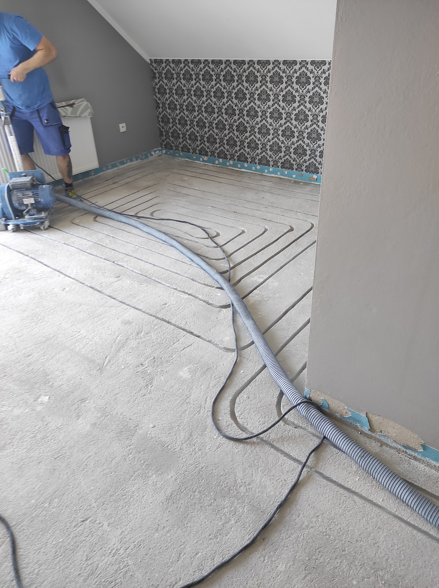
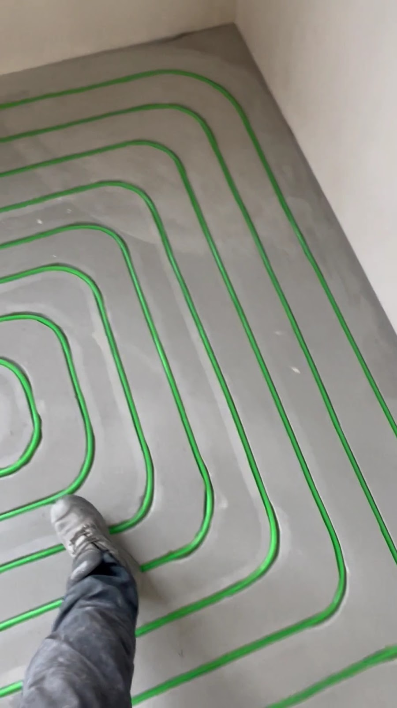
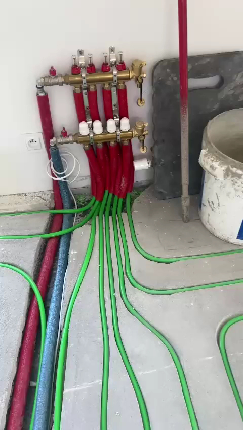
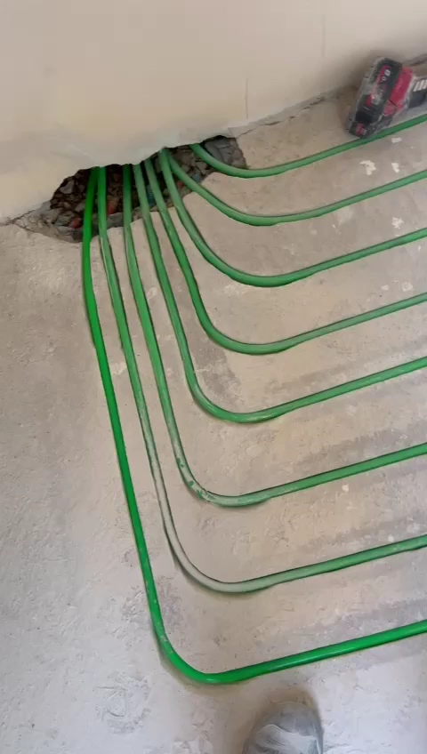
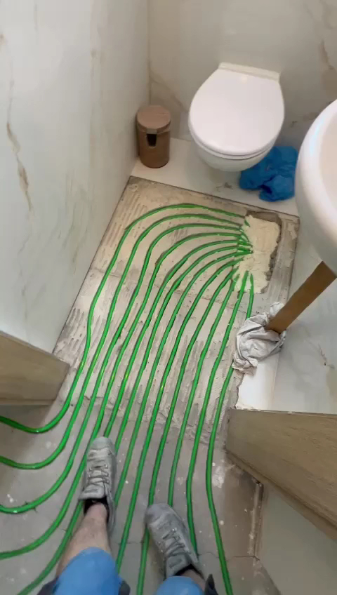
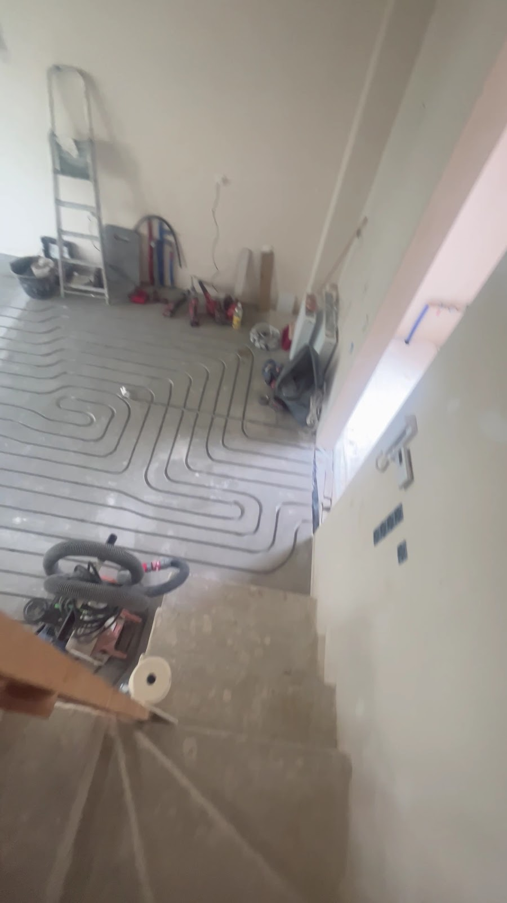
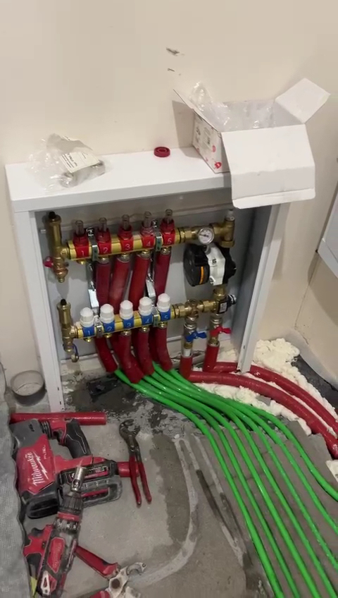

Frezowanie pod ogrzewanie podłogowe — bez kucia i bez bałaganu
Wycinamy rowki pod rury grzewcze w gotowej wylewce. Bez skuwania podłogi, bez podnoszenia jej poziomu, z minimalnym pyłem. Montaż do 100 m² nawet w jeden dzień.
Ogrzewanie podłogowe bez remontu od zera
Frezowanie to sposób montażu ogrzewania podłogowego w istniejącej, gotowej wylewce. Specjalna maszyna wycina w niej rowki głębokości ok. 2 cm, w których układane są rury grzewcze — bez skuwania posadzki i bez wpływu na konstrukcję budynku.
Dzięki podłączonemu do frezarki przemysłowemu odkurzaczowi, prace można wykonać nawet w wykończonym, zamieszkałym mieszkaniu — praktycznie bez pyłu i bałaganu.
- Zero skuwania całej posadzki
- Poziom podłogi i progi bez zmian
- Praktycznie bez pyłu dzięki odkurzaczowi przemysłowemu
- Można wykonać w zamieszkałym mieszkaniu
- Montaż do 100 m² w ok. 1 dzień
Dlaczego warto wybrać frezowanie
Bez kucia posadzki
Rowki na rury wycina frezarka — nie skuwamy całej podłogi ani nie robimy nowej wylewki.
Szybszy montaż
Nawet 1 dzień dla 100 m² zamiast tygodni przy tradycyjnej podłogówce.
Szybsze nagrzewanie
Rury tuż pod posadzką — ciepło dociera szybciej niż w tradycyjnej instalacji.
Bez podnoszenia podłogi
Poziom posadzki i progi pozostają bez zmian — brak potrzeby wymiany drzwi.
Niższe koszty ogrzewania
Instalacja pracuje na niższej temperaturze, ciepło rozkłada się równomiernie.
Szeroka elastyczność
Sprawdzi się w mieszkaniach, domach, kamienicach, biurach i lokalach usługowych.
Proces frezowania w 4 krokach
Pełny opis techniczny procesu, wymagań wobec wylewki oraz dobór sterowania znajdziesz w kompendium wiedzy.
Projekt i pomiary
Sprawdzamy rodzaj wylewki, izolację i przebieg innych instalacji, projektujemy rozkład pętli grzewczych.
Frezowanie rowków
Frezarka z podłączonym odkurzaczem wycina kanały pod rury — praktycznie bez pyłu.
Układanie rur i klej
Rury dopasowujemy do wycięć i pokrywamy elastycznym, odpornym na temperaturę klejem.
Podłączenie i test
Podłączenie do rozdzielacza i źródła ciepła, próba szczelności — instalacja gotowa pod posadzkę.
Twój harmonogram dzień po dniu
Podaj metraż i zakres, a rozpiszemy, co dzieje się kiedy.
Ile kosztuje frezowanie pod ogrzewanie podłogowe
Nawet o ok. 30% taniej niż tradycyjna podłogówka wykonywana od zera.
- Frezowanie posadzki pod wodne ogrzewanie podłogowe
- Prosty, przejrzysty model wyceny za m²
- Opcjonalnie: kompleksowa realizacja z instalacją
Przy małym metrażu koszty stałe (dojazd, sprzęt, organizacja) stanowią dużą część ceny, dlatego wyceniamy każde zlecenie osobno.
| Czynnik | Wpływ na cenę |
|---|---|
| Dokładna powierzchnia | m² |
| Liczba kondygnacji | dostępność pomieszczeń |
| Zakres usługi | samo frezowanie / pełna realizacja |
Frezowanie kontra tradycyjna podłogówka
Przesuń suwak na swój metraż i zobacz, czym te dwie metody różnią się w praktyce.
- Podniesienie poziomu podłogi
- 0 cm
- Skuwanie starej posadzki
- nie
- Gruz do wywiezienia
- —
- Prace na budowie
- —
- Czekanie na wyschnięcie
- brak
- Podłogę można kłaść po
- —
- Podniesienie poziomu podłogi
- ok. 12–15 cm
- Skuwanie starej posadzki
- tak
- Gruz do wywiezienia
- —
- Prace na budowie
- —
- Czekanie na wyschnięcie
- 3–4 tygodnie
- Podłogę można kłaść po
- —
Porównanie dotyczy remontu, czyli sytuacji, w której trzeba usunąć istniejącą posadzkę. Przy budowie od zera, gdzie wylewkę i tak się robi, różnica w czasie jest mniejsza. Liczby orientacyjne, dokładny harmonogram podajemy w ofercie.
Policz swoje ogrzewanie podłogowe w 3 minuty
Wypełnij pomieszczenie po pomieszczeniu, a wrócimy z wyceną i planem pętli. Bez zobowiązań.
Wynik jest orientacyjny. Dokładny zakres i cenę ustalamy po oględzinach albo po zdjęciach posadzki.
Ponad dekada doświadczenia w całej Polsce
Jedna z pierwszych firm w Polsce specjalizujących się we frezowaniu pod ogrzewanie podłogowe — od pojedynczych mieszkań po szpitale i urzędy.
Jedni z pierwszych w Polsce
Ponad 10 lat wypracowanych rozwiązań technicznych i procedur montażowych.
Kompleksowa obsługa
Projekt, frezowanie, układanie rur, podłączenie do źródła ciepła i próba szczelności — jeden wykonawca od początku do końca.
Wiele ekip, cała Polska
Kilka wyspecjalizowanych brygad pozwala nam elastycznie dopasować termin i dojechać w każdy region kraju.
Małe i duże obiekty
Mieszkania i domy jednorodzinne, ale też szpitale, jednostki wojskowe i urzędy miast.
Projekt od specjalisty
Rozkład instalacji przygotowuje osoba z ponad 10-letnim doświadczeniem w ogrzewaniu podłogowym.
45 000 m² zrealizowane
Robimy średnio ok. 100 m² frezowanego ogrzewania dziennie — remont trwa krócej.
Ponad 45 000 m² ciepłej podłogi
Mieszkania, domy jednorodzinne, kamienice, a także szpitale, jednostki wojskowe i urzędy miast.
Realizowaliśmy u Ciebie ogrzewanie? Napisz kilka zdań — to najlepsza pomoc dla kolejnych osób, które się wahają.
Zobacz jak wygląda frezowanie w praktyce
Zdjęcia z naszych budów: frezarka przy pracy, wyfrezowane rowki, ułożone pętle i podłączenie do rozdzielacza. Bez stocków i bez renderów.
 Przed
Przed
 Po
Po
 Przed
Przed
 Po
Po
 Przed
Przed
 Po
Po







Rozdzielacz ogrzewania podłogowego
Wszystkie pętle grzewcze zbiegają się w jednym miejscu — rozdzielaczu. To on rozdziela wodę na poszczególne obiegi i pozwala niezależnie regulować przepływ w każdym pomieszczeniu. Rozdzielacz montujemy w szafce podtynkowej lub natynkowej, najczęściej w korytarzu lub garderobie, blisko źródła ciepła.


FAQ
Czym różni się ogrzewanie podłogowe frezowane od tradycyjnego?
Frezowane wykonuje się w istniejącej wylewce, wycinając rowki pod rury — bez skuwania całej podłogi i nowej wylewki. Tradycyjna podłogówka wymaga ułożenia rur na izolacji i zalania grubą warstwą jastrychu, co podnosi poziom podłogi i wydłuża remont.
Czy frezowanie jest bezpieczne dla konstrukcji budynku?
Tak. Frezowanie wykonujemy wyłącznie w warstwie wylewki, standardowo na głębokość ok. 2 cm — nie ingerujemy w strop ani elementy konstrukcyjne budynku.
Ile trwa montaż frezowanego ogrzewania podłogowego?
Powierzchnia do 100 m² to zwykle 1 dzień pracy, większe domy 2–3 dni robocze. Duże obiekty planujemy indywidualnie.
Czy można to zrobić w wykończonym, zamieszkałym mieszkaniu?
Tak, bardzo często tak pracujemy. Frezarki mają podłączony przemysłowy odkurzacz, dzięki czemu pyłu jest minimalnie, a prace można podzielić na etapy.
Zobacz, jak rozłożą się pętle w Twoim pomieszczeniu
Podaj wymiary, a narysujemy realny układ rur. Metry liczymy z tego, co widzisz na rysunku, a nie z uproszczonego wzoru.
Co jeszcze wpływa na długość rury
- Kształt pomieszczenia — nieregularne bryły wymagają więcej rury, bo trzeba omijać przeszkody.
- Strefy grzewcze — tam, gdzie potrzeba wyższej temperatury, jak w łazience, rury układamy gęściej.
- Rodzaj rury — materiał narzuca maksymalną długość jednej pętli, zwykle 80–100 m.
Wynik orientacyjny. W realnym projekcie dochodzą jeszcze straty ciepła pomieszczenia, zagęszczenie przy oknach i omijanie zabudowy stałej. Wyślij dane przez analizę techniczną, a policzymy to dokładnie.
Porozmawiajmy o Twoim ogrzewaniu podłogowym
Napisz lub zadzwoń — przygotujemy indywidualną wycenę na podstawie metrażu i warunków technicznych. Działamy na terenie całej Polski.